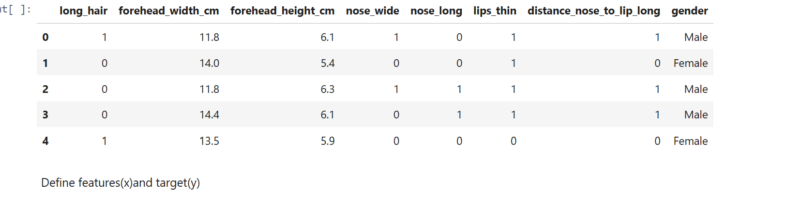
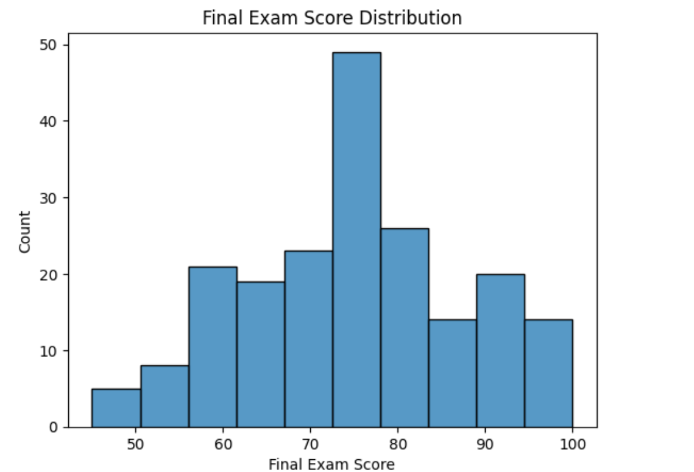
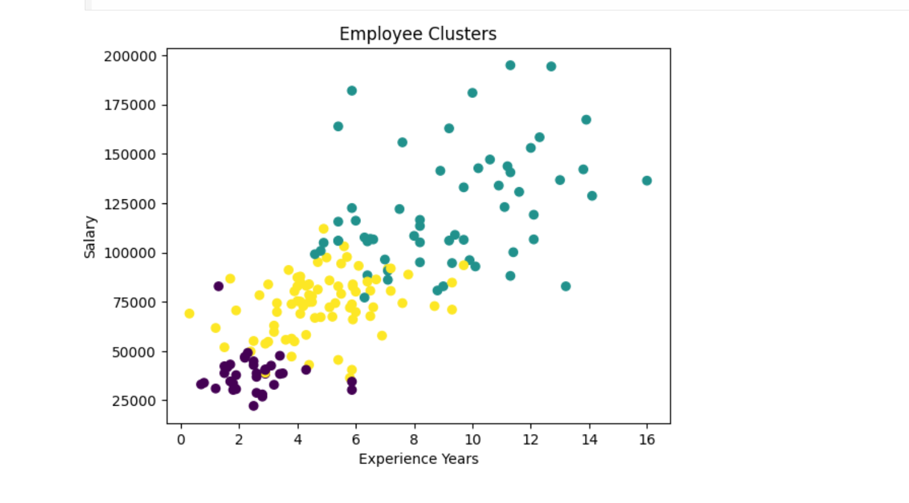
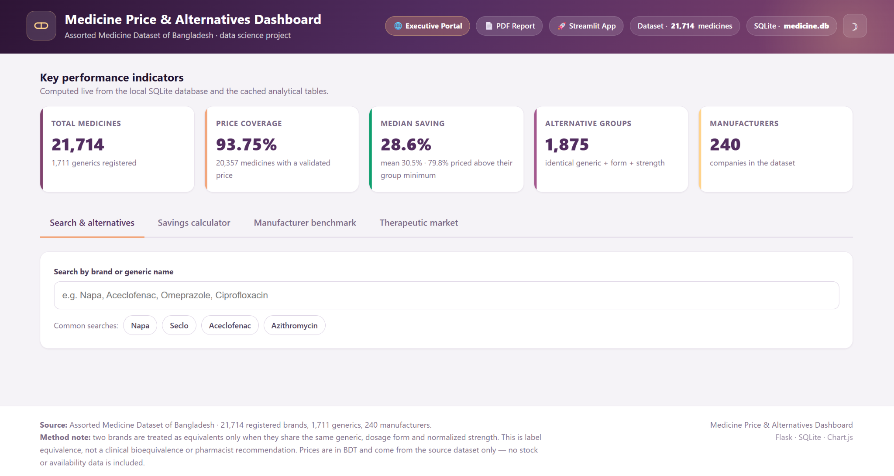
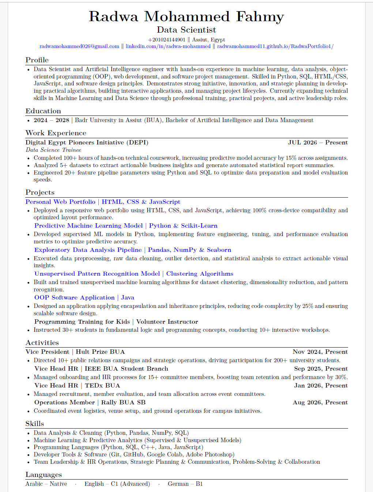

Passionate about data analysis, machine learning, Python, and turning data into meaningful insights and practical solutions.
I am passionate about Data Science and Machine Learning, with hands-on experience in data analysis, data preprocessing, visualization, and predictive modeling using Python. I enjoy transforming raw data into meaningful insights and building machine learning solutions to explore patterns and support data-driven decision making.
My experience includes working with Python, Pandas, NumPy, Seaborn, and Scikit-Learn, along with practical projects covering exploratory data analysis, supervised learning, and unsupervised learning. I am continuously developing my technical skills and expanding my knowledge across the data science field.

Developed supervised machine learning models using Python and Scikit-Learn, applying feature engineering, model tuning, and performance evaluation to improve predictive performance.
View on GitHub
Performed data cleaning, preprocessing, outlier detection, and exploratory statistical analysis to uncover patterns and generate meaningful insights through data visualization.
View on GitHub
Applied unsupervised learning techniques for data clustering and pattern recognition, using dimensionality reduction to explore relationships and hidden structures within datasets.
View on GitHubDesigned and developed a Java application applying core object-oriented programming concepts, including encapsulation and inheritance, with a focus on maintainable and scalable software design.
View on GitHub
Processed and analyzed the Assorted Medicine Dataset of Bangladesh through a reproducible data science pipeline. The project prepares cleaned data for SQL storage, exploratory analysis, generic medicine alternatives, patient savings calculations, and interactive dashboards.
View on GitHubA concise overview of my technical skills, projects, experience, and professional development.
Data Science & Machine Learning

👋 Hi there!
Need help? Click meHi 👋
I’m your portfolio assistant